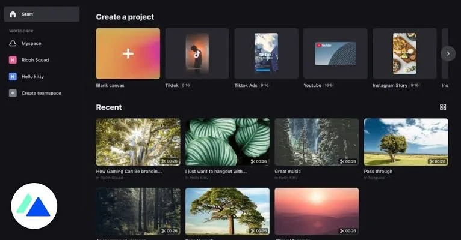

Video editing is an art, a craft that turns mundane moments into magical ones. CapCut, formerly known as Viamaker, has become a go-to app for millions of people who want to flex their creative muscles, be it for Instagram reels, TikTok videos, or full-blown YouTube content. If you've ever heard someone say, “That looks CapCut-ed!” you know it's become a big deal.
Now, CapCut isn't a one-size-fits-all solution. Like many apps, it has evolved over time, offering various versions for different needs and preferences. Some might argue that it’s like ordering a pizza—you’ve got the classic, the stuffed crust, the thin crust, and the one that makes you wonder, "Is this even pizza anymore?" But, regardless of which version you download, you're going to be slicing and dicing your videos like a pro.
Let’s dive into the benefits of all versions of CapCut APK, and spoiler alert: it’s mostly about being fun and easy. Because, why stress out about video editing when you can CapCut it like a boss?
When CapCut first launched, it was a humble app known as Viamaker, designed to make video editing more accessible. Though it lacked some of the fancy bells and whistles that have since come, it was, and still is, the foundation for what CapCut has become.
Remember when you first tried to edit a video and ended up making your dog’s bark sound like a cat meow? Yeah, that’s what makes CapCut 1.0 great—it’s simple enough to not confuse you with strange sound effects (unless you want to).
The second version of CapCut started adding more advanced features like multi-track editing and some improved transitions. It was like putting some extra cheese on your pizza—still simple, but just a little more satisfying.
It’s kind of like you upgraded from riding a tricycle to a bicycle with training wheels. You’re still wobbling, but man, do you feel cool doing it.
By the time we got to version 3.0, CapCut had evolved into a powerhouse for social media enthusiasts. With a rise in TikTok challenges and Instagram stories, this version embraced all the features necessary for viral content.
It’s like wearing a superhero cape in your videos. You feel unstoppable, even if your backdrop is your laundry pile.
Now, CapCut 4.0 was where things got serious. It’s as if the app decided, “Hey, why stop at pizza? Let’s throw in some garlic knots and a side of wings.” This version wasn’t just for influencers—it was for people who wanted to take video editing up several notches, all while keeping it mobile-friendly.
With 4.0, it’s like upgrading from pizza to a full Italian dinner. You’re full, but you’re not complaining—it’s just too good to stop.
Today’s CapCut is like a Swiss Army knife of video editing. It’s packed with tools, features, and options that let you edit like a pro, even if you’ve never opened a video editing app in your life.
It’s like getting unlimited toppings on your pizza. Will the combination of pineapple, mushrooms, and pepperoni work? Probably not, but hey, at least CapCut lets you try.
Each version of CapCut offers something unique, whether you’re a newbie just trying to slap some text on a video or a power user looking to create complex motion graphics. The beauty of the CapCut Pro APK is that you can find older versions if you’re nostalgic for simplicity, or dive into the latest features if you want to be on the cutting edge of content creation.
So, why settle for one slice when you can have the whole pizza?
CapCut might not solve all your problems, but it’ll at least make your videos look cool while you procrastinate on the real ones.